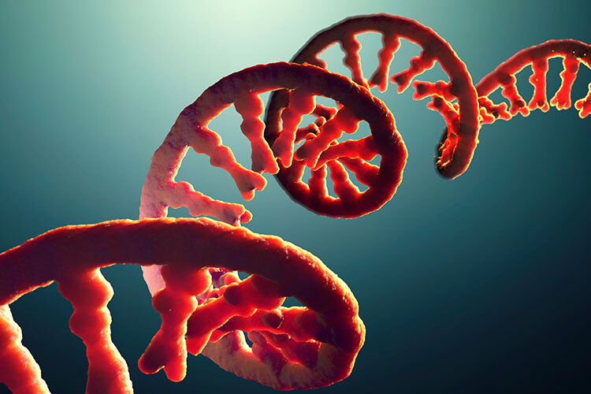

¿Qué son las Vitaminas?
Las vitaminas son micronutrientes esenciales que nuestro cuerpo necesita en pequeñas cantidades para funcionar correctamente.
Tipos de Vitaminas
- Liposolubles: A, D, E, K - Se almacenan en la grasa del cuerpo.
- Hidrosolubles: C y complejo B - Se disuelven en agua y no se almacenan.
¿Qué es el ADN?
El ADN (Ácido Desoxirribonucleico) es la molécula que contiene la información genética de todos los seres vivos.
¿Qué es el ARN?
El ARN (Ácido Ribonucleico) es una molécula que copia la información del ADN y participa en la producción de proteínas.

Actividades Interactivas
- Clasifica cada vitamina como liposoluble o hidrosoluble.
- Sopa de letras: Busca ADN, ARN, proteína, vitamina.
- Ordena el proceso: ADN → ARN → Proteína.
ü߆ Hilos Conductores
- ¿Qué tipos de vitaminas existen y qué funciones cumplen en el cuerpo humano?
- ¿Cómo afectan factores como la temperatura, el pH y el tiempo a la estructura y función de las vitaminas?
- ¿Cómo analizamos cuantitativamente los cambios en las vitaminas?
- ¿Cómo diseñamos un experimento que permita controlar y medir con precisión las variables?
- ¿Qué decisiones informadas podemos tomar para conservar mejor los nutrientes en nuestros alimentos?